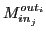
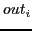
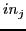

Next: Targeting large logic blocks
Up: Probabilistic Error Masking Matrix
Previous: PeMM Definition
PeMM for large circuits can be deducted through gate-level PeMM combinations, which requires a detailed knowledge on gate-level netlist of the targeted circuits. However, when the discussion is focused on the fault propagation analysis where only the primary inputs of logic blocks are faulty, PeMM can be also characterized through high-level behavioral simulation, for instance using C language based testbenches. For a specific circuit with random data inputs, the masking probability

can be acquired by averaging the error probability on 
among multiple experiments, where one bit-flip fault is injected onto input 
in each experiment.
Subsections
Zheng Wang A Chattopadhyay
2014-07-16